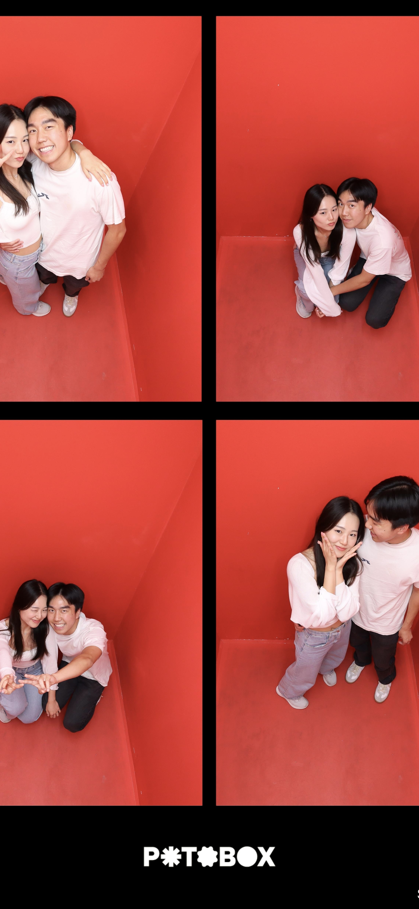
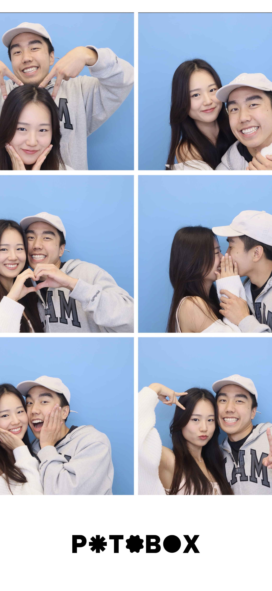
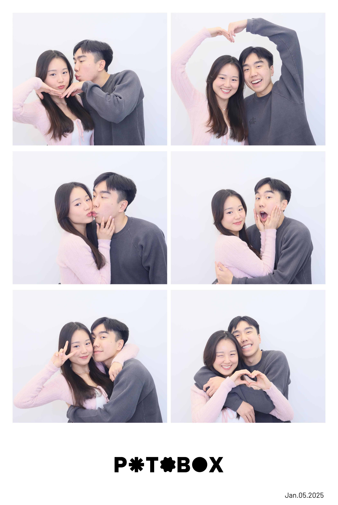
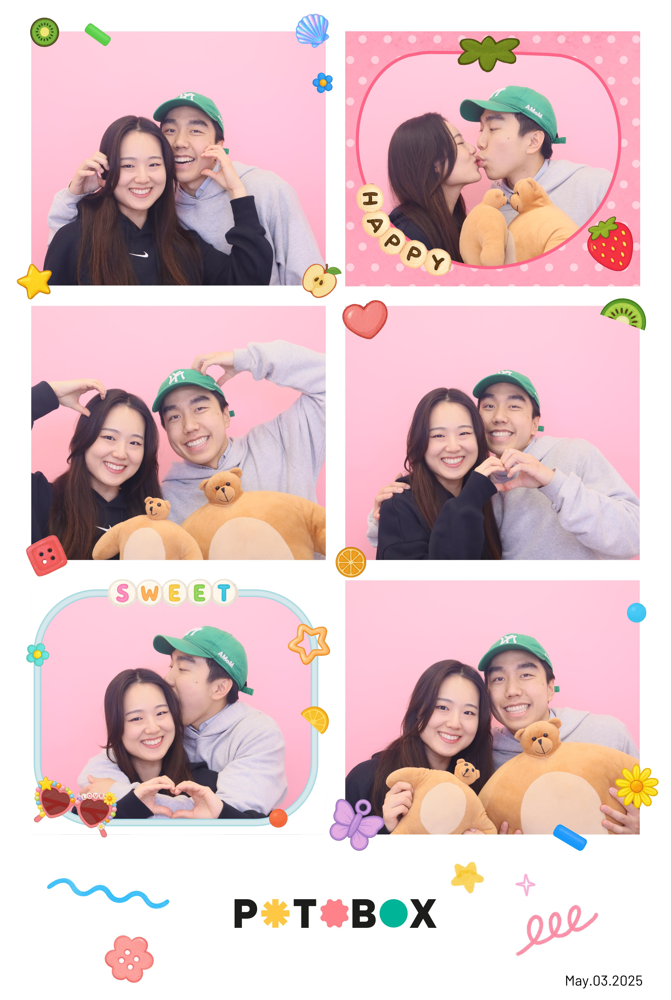

Our first Potobox and actually before we started dating. I remmeber being so nervous because I didn't know how to pose and I didn't want to kiss you yet.
8/31

Our 2nd Potobox with the high rise. This one was hard to maneuver... I still think we look super cute and it was fun.
10/19

This was the time I came super quick in October and I remember the video for this one looking super cute.
1/5

I remember coming back from Toronto and it was still super cold and snowy and we were super lazy but after that Toronto photobooth tried robbing us... we had to go to our trusty Potobox.
5/3

This was our first time usin gprops and it was funny that they had the bear we saw on Youtube and the baby version of it. This was so fun and I love taking photos with you.